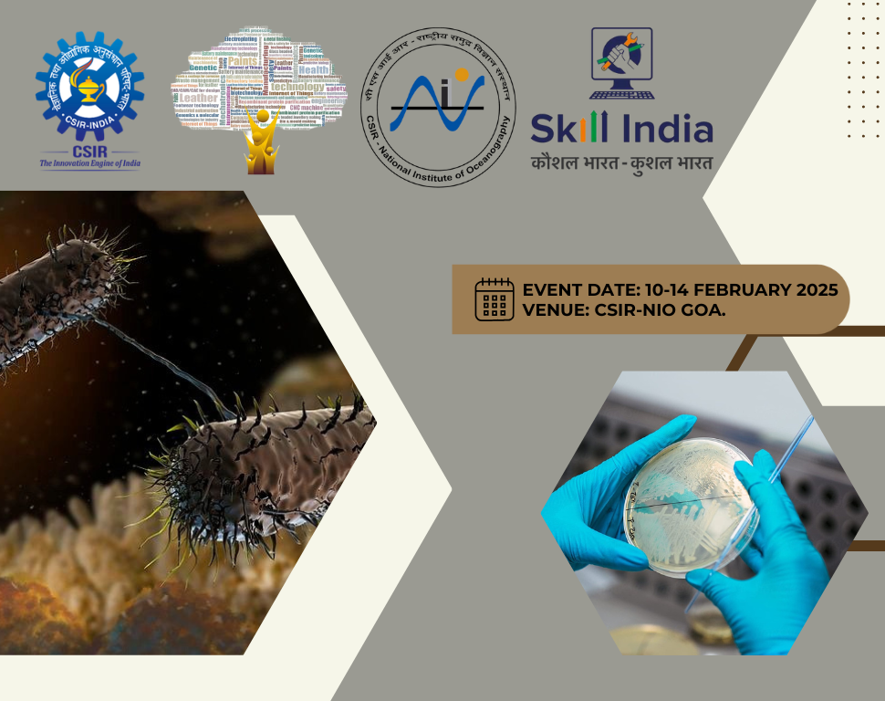
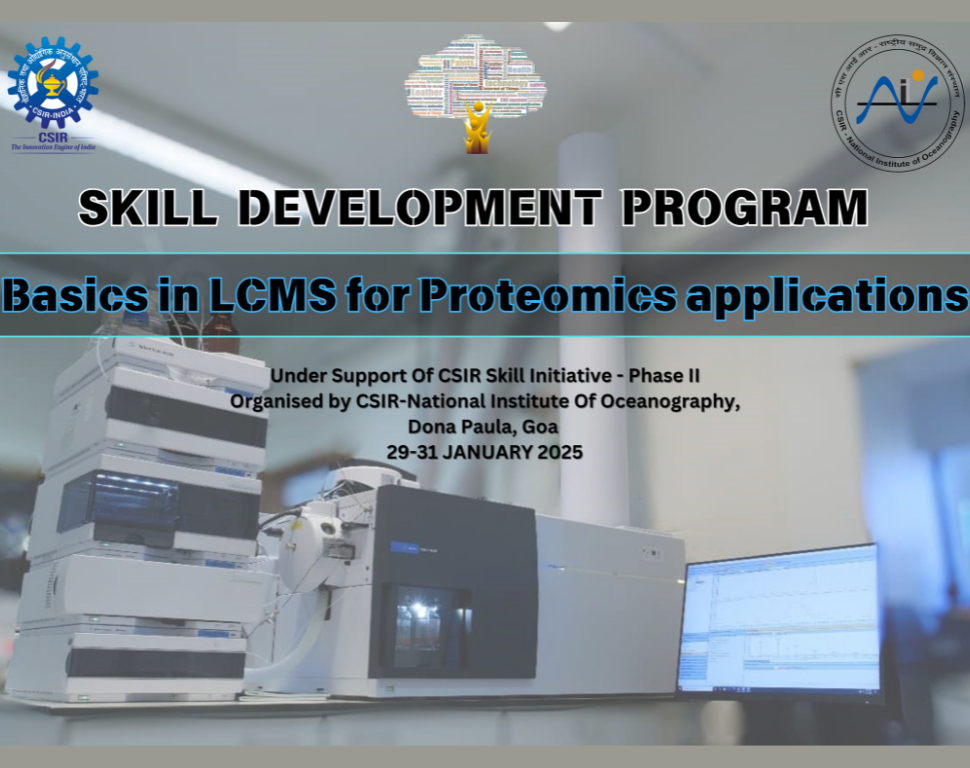
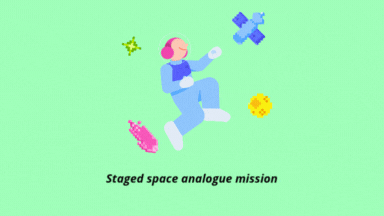
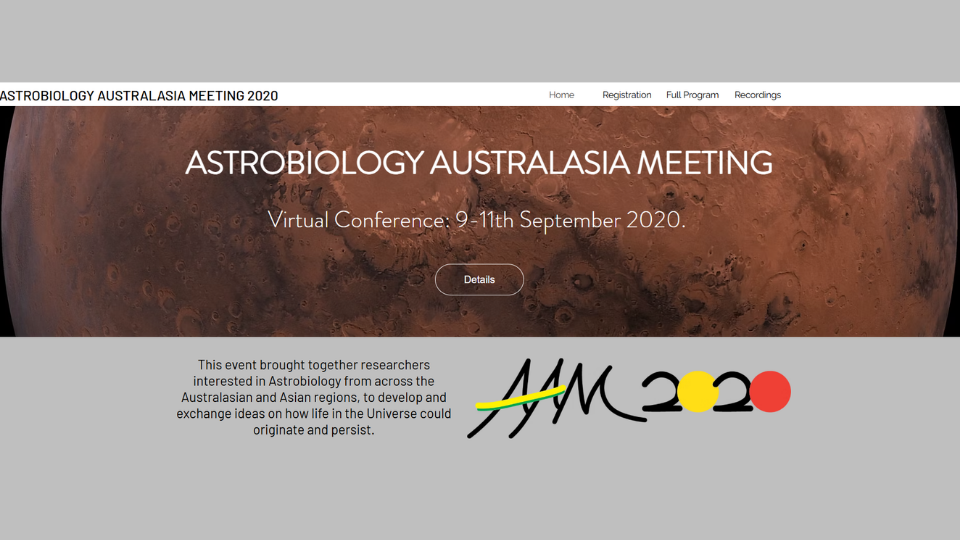

Workshops

Hands-on workshop on Horizontal Gene Transfer (Protoplast Fusion)
Participated in a specialized hands-on training session focused on Horizontal Gene Transfer techniques, specifically Protoplast Fusion, under the Skill India initiative.

Hands-on workshop on Mass Spectrometry for Proteomics
Extensive hands-on training in Mass Spectrometry applications for Proteomics research, part of the Skill India program at CSIR-NIO.
Courses

Dr. Julio Rezende
Analog Astronaut - Habitat Marte Mission
Participated in a staged Mars analogue mission focused on sustainability strategies for future space habitats, including habitat design R&D and facility upgrades at Habitat Marte, Brazil.

Introduction to Astrobiology
Completed a comprehensive course on Astrobiology at the Amity Centre of Excellence in Astrobiology, covering life's origins and potential beyond Earth.

Astrobiology Australasia Meeting (AAM)
Participated in the Astrobiology Australasia Meeting, engaging with researchers on the latest developments in astrobiological research in the Australasian region.